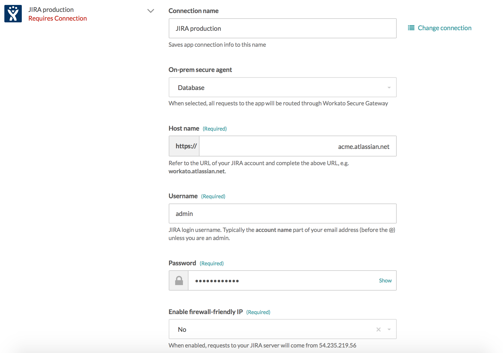

On-premise access
Workato is a hybrid integration platform that connects to both cloud applications as well on-premises applications behind the firewall. On-premise access is enabled only for certain plans. Check the Pricing and Plans page or reach out to Workato sales representatives at +1 (844) 469-6752 to find out more.
For Workato accounts with on-prem access, users are able to view the on-prem option on their account menu.
 On premise menu option
On premise menu option
On-premise overview
The following is a conceptual model of Workato's on-premise agent and connector and how it interacts with applications and databases behind the firewall.
 Conceptual model for on-prem agent and connector
Conceptual model for on-prem agent and connector
The on-prem agent is a lightweight module to be installed behind the company's firewall. The agent utilizes a secure tunnel over TLS to facilitate interaction between Workato and on-prem applications. These on-prem applications should have REST endpoints to be compatible with the on-prem agent.
The on-prem connector is an additional module which should be installed in order to interact with databases behind the firewall.
Supported operating systems
The on-prem connector works with Windows, macOS and Linux.
Setting up on-prem access
On the On-prem access page, there is the option to create a new agent. Once created, detailed setup instructions can be found within the How to use tab.
 Creating and setting up a new on-prem agent
Creating and setting up a new on-prem agent
Working with the on-prem agent
To interact with on-premise applications, the on-prem agent has to be started and kept running. From the <INSTALL_HOME>/workato/agent directory, run the following command:
Windows:
./start_agent.cmd
macOS:
./start_agent.sh
Verify that the agent is active on the *On-prem access page.
 Active/inactive status for on-prem agent and connector
Active/inactive status for on-prem agent and connector
With an active agent, connect to on-premise applications by selecting the correct agent and providing the required credentials.
 Selecting the Database on-prem agent when connecting to JIRA
Common errors when using the on-prem connector
If connecting to on-prem applications fail, check that:
- Selected agent is active
- Credentials provided in the app connection are correct
- Credentials of user provided in the app connection has correct role and permission to connect
Working with the on-prem connector
To interact with on-premise databases, the on-prem agent has to first be configured and started. Additionally, follow the setup instructions to configure connection profiles for the database you wish to connect to.
Subsequently, the on-prem connector has to be started and kept running. From the <INSTALL_HOME>/workato/connector directory, run the following command:
Windows:
./start_connector.cmd
macOS:
./start_connector.sh
Verify that the connector is active on the *On-prem access page.
Active/inactive status for on-prem agent and connector
With an active agent and connector, connect to on-premise databases by selecting the correct agent and connection profile. As the credentials should have been provided in the connection profile, it is not required.
 Selecting the on-prem agent Events Team and providing configured connection profile name sql as input
Selecting the on-prem agent Events Team and providing configured connection profile name sql as input
Common errors when using the on-prem connector
If connecting to on-prem databases fail, check that:
- Selected agent is active
- Selected connector is active
- Credentials provided in the connection profile are correct
- Database name and type provided in the connection profile is correct
Example recipes
Salesforce case sync with on-prem SQL Server Quickbase data sync with SQL Server